Museum-backed pack
Calligraphy Reference Pack
A small styling set built from the official museum sources already discussed for the site redesign: Cleveland Museum of Art, The Met, and the National Museum of Asian Art.
Metadata and rights proof live in manifest.json. Sampled tokens live in palette.json.
Palette Direction
Original References
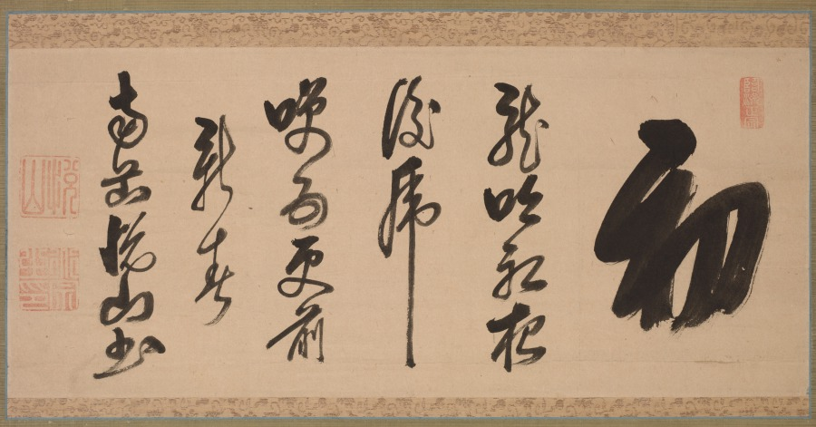
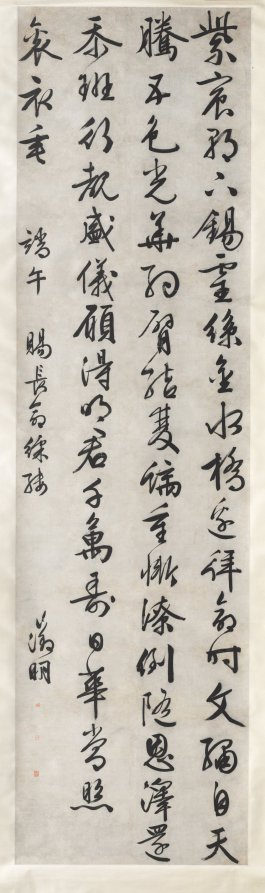
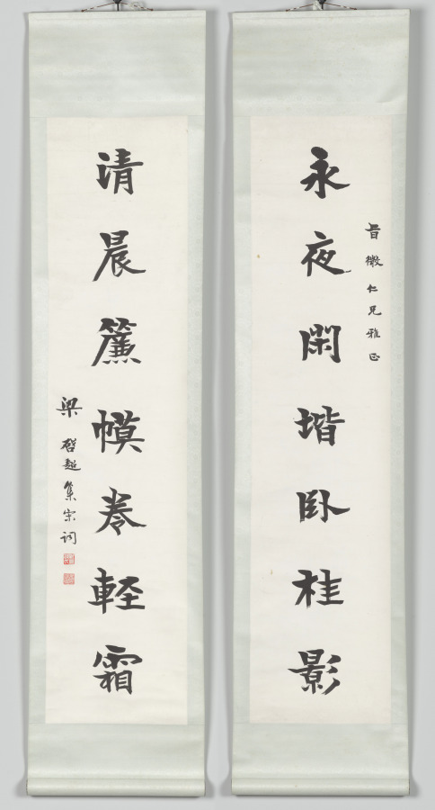
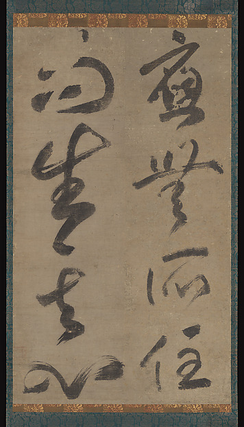
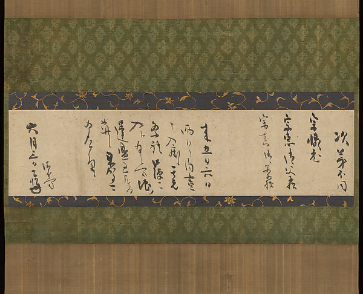
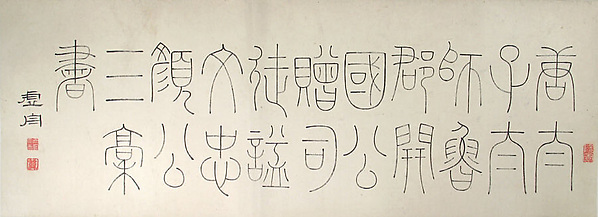
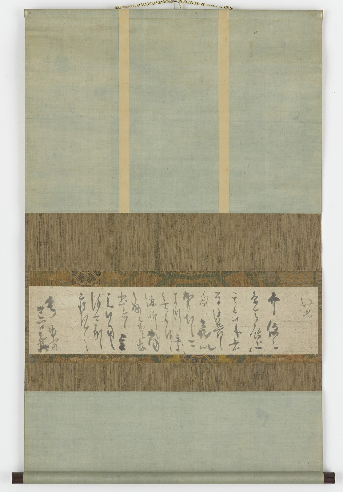
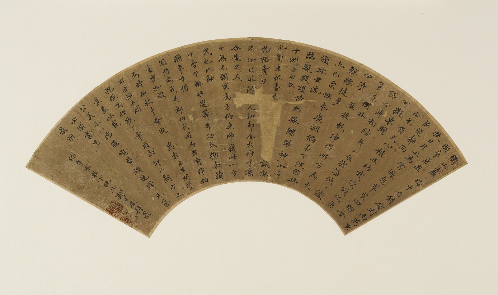
Direct-Use Derived Elements
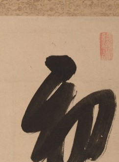
Hero Gesture
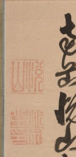
Seal Column
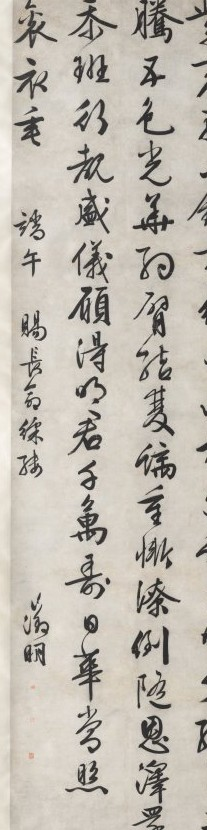
Vertical Run
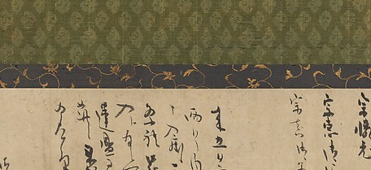
Letter Band
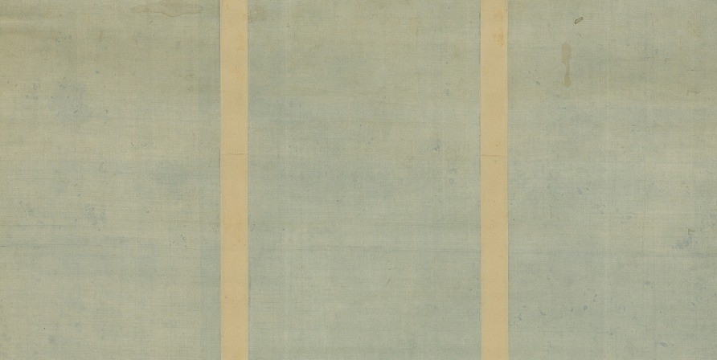
Paper Field
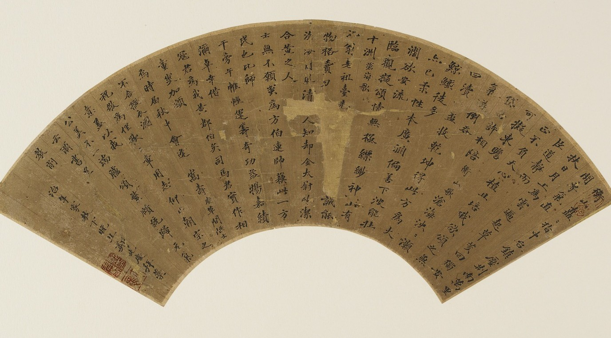
Fan Arc
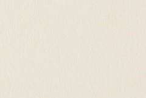